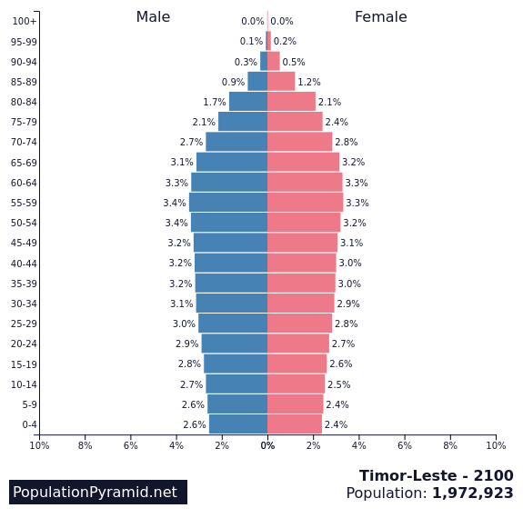
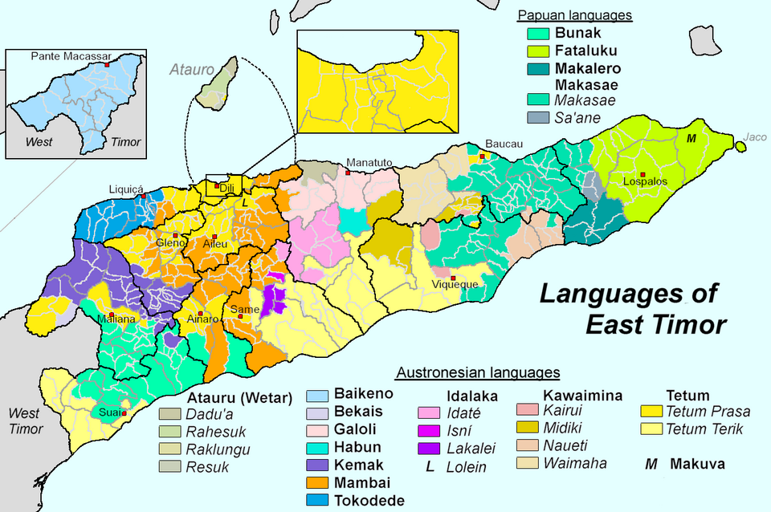
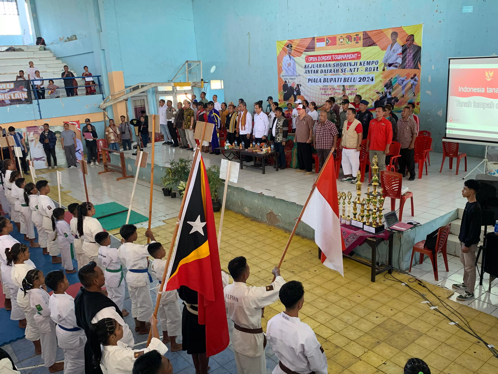
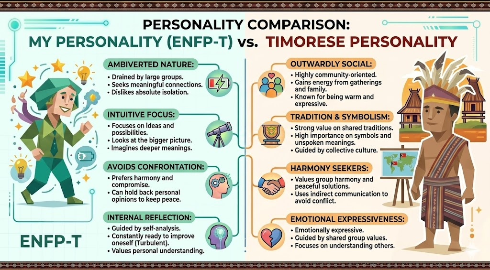
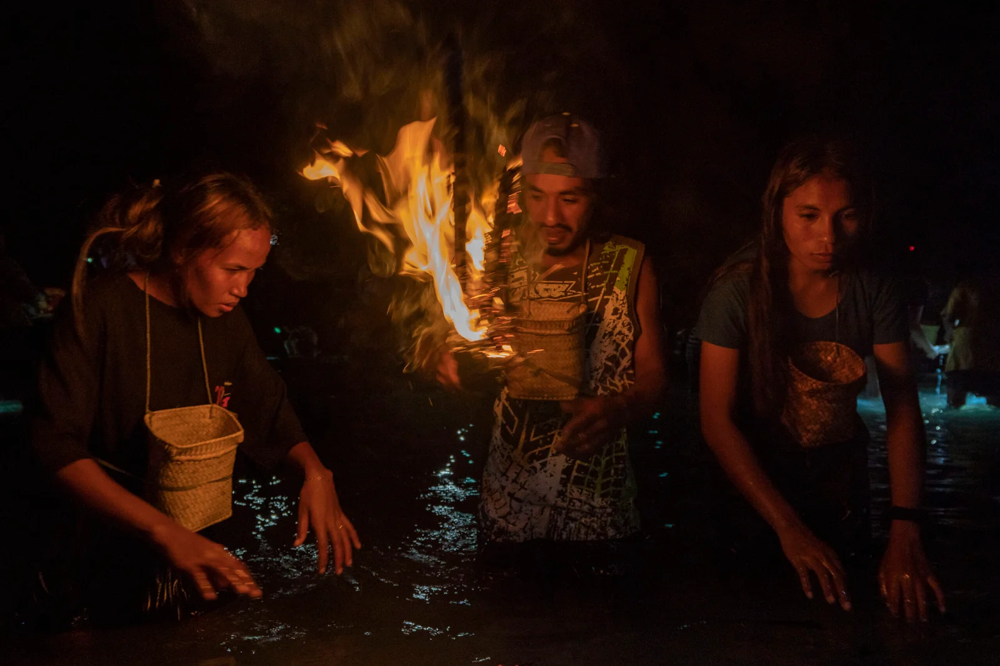
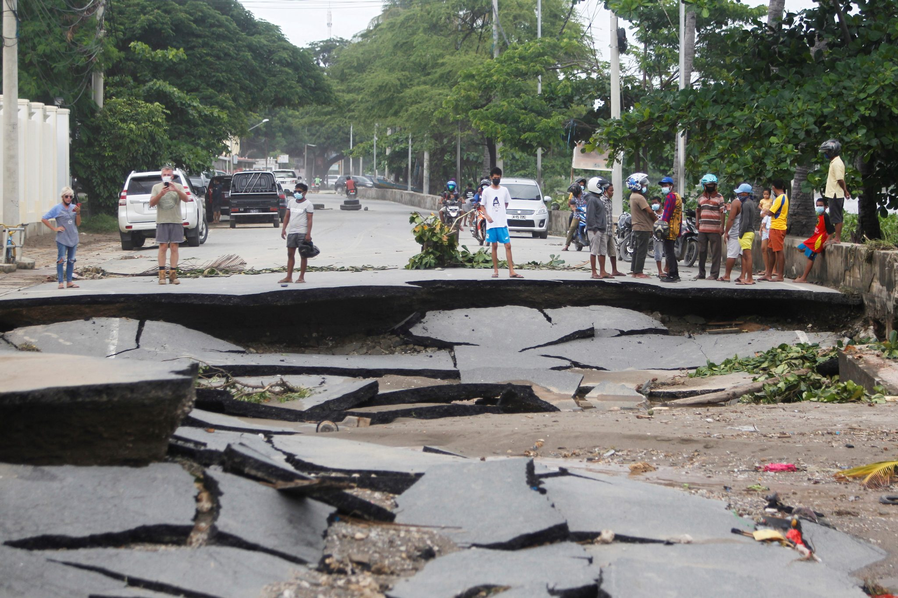

Timor Leste, the eastern half of the island of Timor, is a Southeast Asian nation known for its rich cultural heritage, stunning landscapes, and resilient spirit. It is home to diverse communities and has a unique history shaped by colonial influences and independence struggles. The country is also recognized for its natural beauty, including pristine beaches and lush forests.
About Timor Leste

Timor Leste Overview

Timor-Leste, also known as East Timor, is a small Southeast Asian nation located on the eastern half of Timor Island, north of Australia. It gained independence in 2002 after a long struggle against Indonesian occupation. The country has a rich cultural heritage influenced by Portuguese, Indonesian, and indigenous traditions. Its official languages are Tetum and Portuguese, while Indonesian and English are widely used. Timor-Leste’s economy relies heavily on oil and gas resources, agriculture, and emerging tourism. Despite challenges such as poverty and infrastructure development, the nation continues to grow politically and economically while preserving its unique culture and strong community traditions.
Population Dynamics

Timor-Leste has a population of about 1.4 million people, making it one of the smallest countries in Southeast Asia. Recent estimates place the population at around 1.42–1.43 million in 2026.
The country has a relatively young population, with a large proportion of people under the age of 25. About 51% of the population is male and 49% female and only around one-third of people live in urban areas, while most live in rural communities. The population density is roughly 97 people per square kilometer.
Political Leadership
José Ramos-Horta was born on December 26, 1949, in Dili, which is now the capital of Timor-Leste. During his youth, Timor-Leste was under Portuguese colonial rule. Later, in 1975, Indonesia invaded the country. This period was very difficult for the Timorese people.
Ramos-Horta became one of the most important voices for Timor-Leste’s independence. He spent many years in exile, traveling around the world to speak at the United Nations and meet foreign leaders. His goal was to gain international support for his country’s freedom. He worked tirelessly and peacefully to defend the rights of his people.
In 1996, José Ramos-Horta and Bishop Carlos Filipe Ximenes Belo were awarded the Nobel Peace Prize for their peaceful efforts to resolve the conflict in Timor-Leste.
Digital Communication
One of the most popular apps used in Timor Leste is MyTelkomcel, a daily tool that helps people stay connected across mountains, towns, and coastal villages. Its best feature is zero-data access: even with no balance, users can open the app and buy internet packages, so they don’t need to hunt for Wi-Fi just to get online.
MyTelkomcel also works like a small digital hub, offering local updates, rewards, and easy account management in one place. By reducing the stress of suddenly losing connectivity, MyTelkomcel supports digital inclusion and opportunity every day.
Language

Timor-Leste has two official languages: Tetum and Portuguese. Tetum is the most widely spoken language and is used in daily communication, local media, and community life. Portuguese became an official language because Timor-Leste was a Portuguese colony for many centuries, so it is still used in government, education, and legal systems. Many people also understand Indonesian, especially those who studied during the Indonesian period, while English is becoming more important for international communication. In addition, Timor-Leste has many indigenous languages, such as Mambae, Fataluku, and Makasae, reflecting its rich cultural diversity.
Traditional Sport

Kempo in Timor-Leste is more than a martial art; it is a growing sport that builds discipline, confidence, and community pride. Training blends self-defense techniques, sparring, and kata-like forms that improve balance, speed, and mental focus. For many young Timorese, the dojo becomes a safe place to learn respect, teamwork, and healthy routines. Local tournaments encourage friendly competition across districts and create role models who show that effort matters more than status. Kempo also supports national identity by celebrating perseverance after hardship, and it can open pathways to regional events, scholarships, and coaching careers for talented athletes. With support, schools and clubs can expand access for girls and rural youth.
Entertainment
Likurai is a traditional theatrical performance of Timor-Leste that combines rhythmic drumming with
coordinated dance movements. Historically, it was performed by women to welcome warriors returning from
battle, using drums to symbolize victory, courage, and communal strength. Over time, Likurai has evolved from
a ritual of celebration into a formal stage performance that represents national identity and cultural
continuity.
The performance is characterized by strong, deliberate footwork and synchronized movements, reflecting
discipline and unity among the dancers. The steady drumbeats serve not only as musical accompaniment but also
as a narrative element, conveying emotion and historical memory. In contemporary settings, Likurai is often
presented at national ceremonies, cultural festivals, and official events.
Today, Likurai stands as more than entertainment. It is a living expression of history, resilience, and pride,
preserving the cultural heritage of the Timorese people for future generations.
Personality

Comparing My Personality with Timorese People
My personality can be described as ambiverted. Sometimes I enjoy being around people, but large social
situations can drain my energy. However, when I am alone for too long, I can feel uncomfortable. I am also
intuitive, meaning I focus on ideas, possibilities, and deeper meanings rather than only facts.
When comparing myself with Timorese people, I notice both similarities and differences. Timorese people are
generally very social, warm, and community-oriented, while I tend to be more reflective and reserved. However,
we share a similar value of harmony and respect. Like many Timorese people, I prefer compromise and peaceful
solutions instead of conflict.
Overall, although my personality is more inward, I share the Timorese appreciation for understanding others
and maintaining harmony in relationships.
Festival

In the eastern part of Timor-Leste, near Jaco Island, the Fataluku people celebrate a fascinating tradition known as the Mechi (Meci) Festival.
This unique event follows the lunar cycle rather than a fixed calendar. The smaller harvest, called Mechi kiik, occurs during the last-quarter moon in February, while the main harvest, Mechi boot, takes place around the new moon in March.
Before sunrise, communities gather along the beach with nets and baskets, waiting for palolo sea worms to emerge briefly from the ocean. Because the worms appear only for a short time, the harvest is both exciting and carefully timed.
After collecting them, people celebrate with traditional food, singing, and dancing. The Mechi Festival reflects the deep connection between local culture, the sea, and the rhythms of nature.
Environment

Timor-Leste faces a major environmental issue: deforestation and land degradation. Many forests have been cleared for firewood, agriculture, and settlement. As a result, soil erosion has become severe, especially during the rainy season. Floods and landslides damage villages, roads, and farmland, while droughts reduce crop production in rural communities. Because much of the population depends on agriculture, environmental damage directly affects food security and livelihoods.
The government of Timor-Leste is working to protect its environment through reforestation and sustainable land management programs. It cooperates with international organizations to plant trees, restore watersheds, and educate farmers about soil conservation techniques. Environmental laws have also been introduced to regulate logging and promote responsible resource use. Although the country still faces economic challenges, these efforts aim to create a more sustainable future.